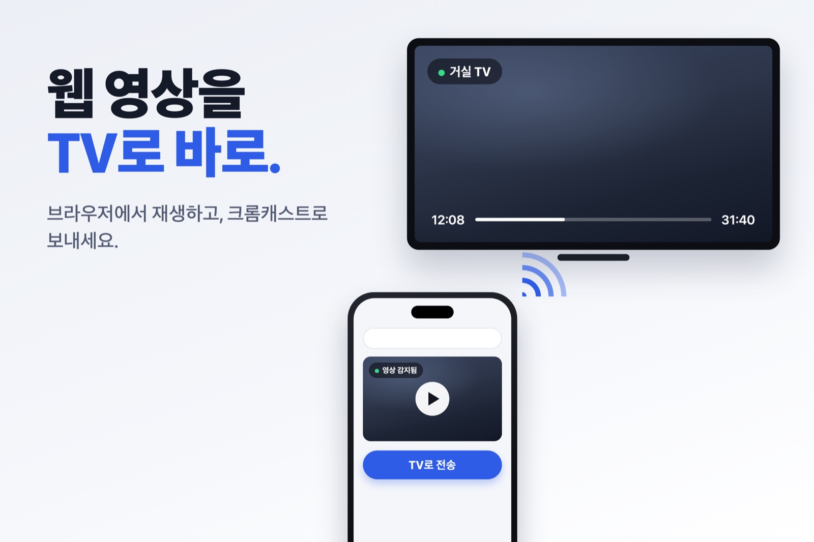
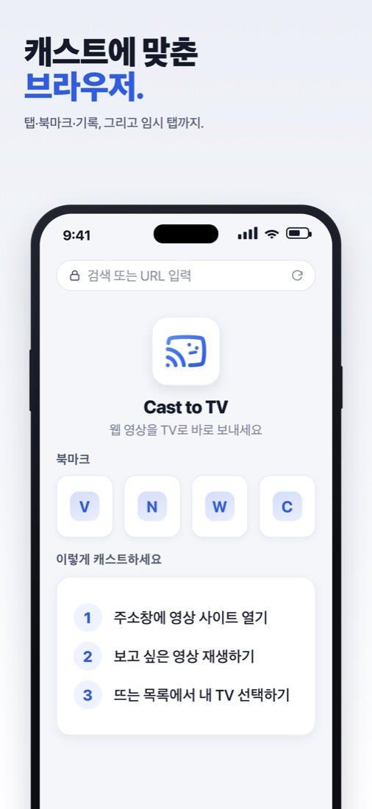
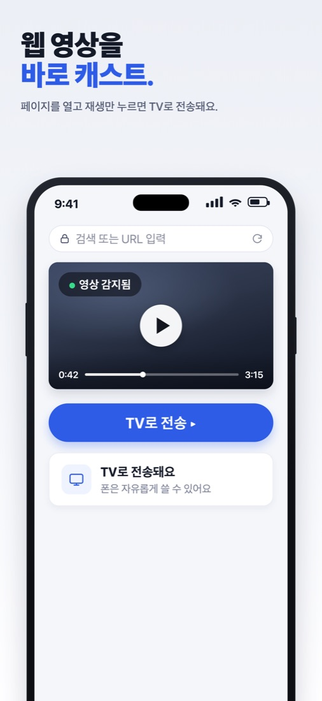
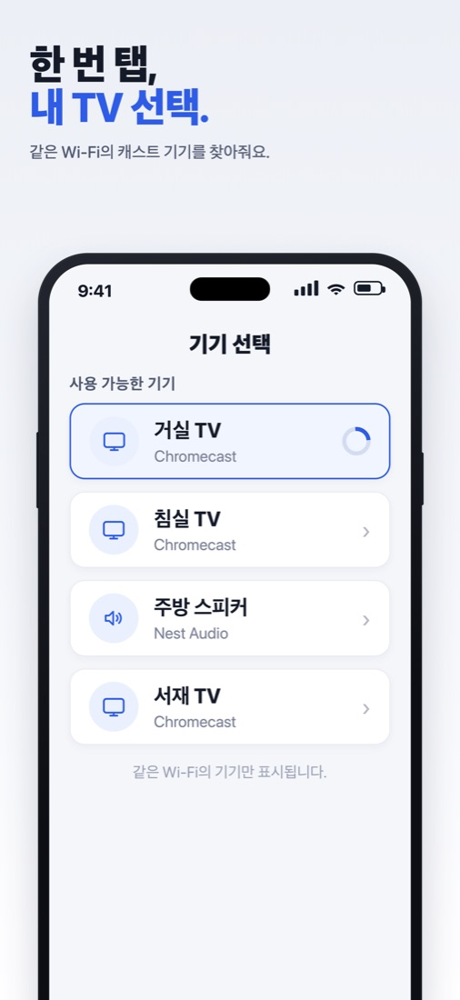
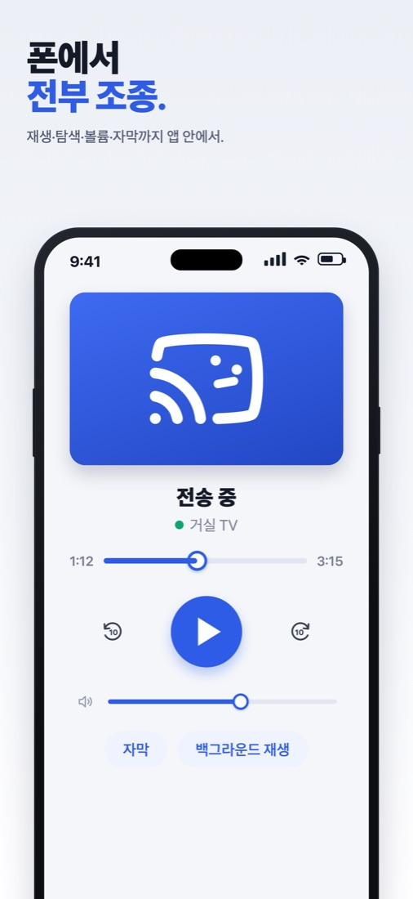
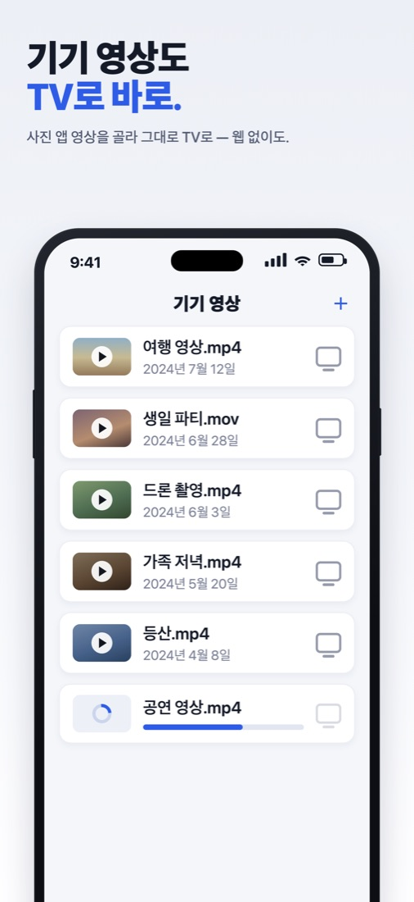

아이폰 × 크롬캐스트
사파리 영상,
TV로 바로 보내는 법
아이폰 사파리엔 크롬캐스트 버튼이 없죠?
앱 하나면 끝납니다. 영상 열고, 재생하고, TV 고르면 끝.

Cast to TV 무료 다운로드딱 3단계



미러링이 아니라 TV가 원본 화질로 직접 재생합니다.
폰은 그동안 마음대로 쓰세요.
이런 것까지 됩니다
- m3u8 라이브 방송, MP4·WebM·MOV 영상
- 자막(WebVTT) 표시
- 폰에 저장된 영상도 TV로
- 잠금화면에서 재생·일시정지·탐색
- 다른 앱 써도 TV는 계속 재생
- 앱에서 TV 볼륨 조절


무료 + 꾸준한 업데이트
구독 없이 무료입니다(광고 포함). 출시 이후 캐스트 안정성과 지원 사이트를 계속 개선하고 있어요. 안 되는 사이트가 있으면 App Store 리뷰로 알려 주세요.
💡 넷플릭스·유튜브는?
각 서비스 공식 앱의 캐스트 버튼을 쓰세요. Cast to TV는 그 외 웹사이트 영상용이에요.
💡 TV가 안 보이면?
같은 Wi-Fi인지 확인 → 아이폰 설정 › 개인정보 보호 및 보안 › 로컬 네트워크에서 허용 → VPN 끄기
Google Cast와 Chromecast는 Google LLC의 상표이며, Cast to TV는 Google과 제휴 관계가 없습니다. 시청 권리가 있는 콘텐츠만 이용하세요.